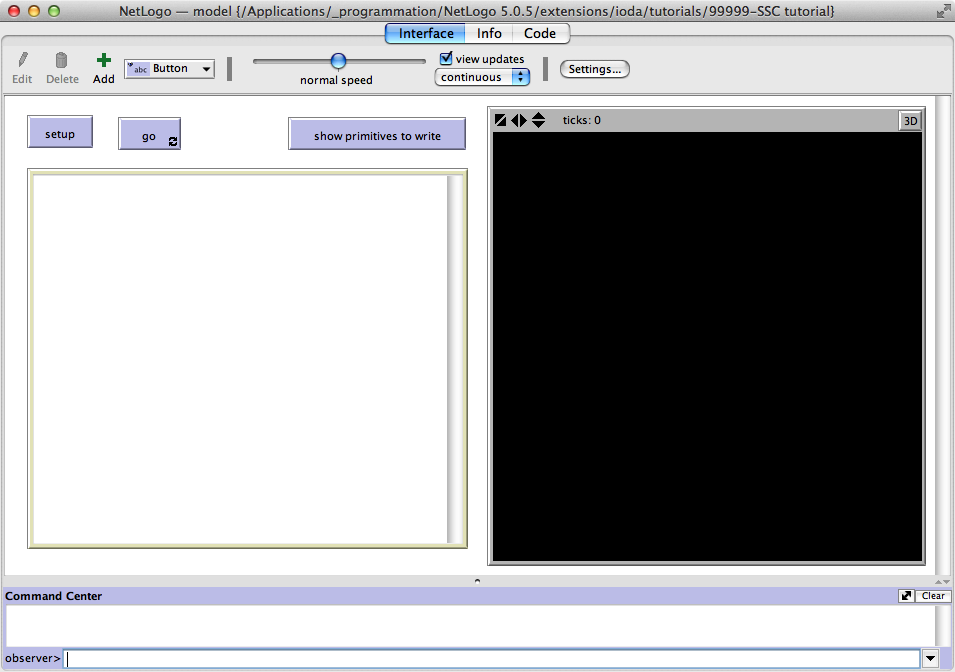

IODA: A Hands-On Tutorial - Steps in the Model DesignSocial Simulation Conference, Barcelona, 2014
Table of Contents
The slides describing the main ideas underlying the Interaction-Oriented Approach to Agent-Based Simulation can be found here.
1 Setup: Starting with the IODA NetLogo extension
Structure of the directory tree for a "standard" installation of the IODA extension within the NetLogo installation directory
-- NetLogo5 [i.e. your own NetLogo installation directory] |-- NetLogo.jar |-- ... |-- extensions |-- ioda |-- ioda.jar |-- IODA_2_2.nls |-- tutorials | |-- 0-template | | |-- interaction.txt | | |-- matrix.txt | | |-- model.nlogo | | | |-- ... | |-- docs
The IODA extension comes with a tutorial directory, which contains
a large number of code examples. Especially, the 0-template
directory provides 3 files that can be used for starting your own model:
model.nlogo: a NetLogo file (see below)interactions.txt: a text file which describes all available interactionsmatrix.txt: a text file in CSV format which describes what interactions are assigned to source and target agent families, with the corresponding priority, limit distance and target selection policy.
For this tutorial we have packed a template.zip file which you just need to download and unpack.
1.1 Include and extension
The IODA NetLogo extension is composed of 2 parts:
- the
iodadirectory, containing the fileioda.jar, can be either installed within theextensionsdirectory of your NetLogo installation directory, or at the same level of the models that you develop - the file
IODA_2_2.nls, which is a source file written in NetLogo, can be put anywhere but you have to specify the full path of the file to access it; a quite simple solution is to put a copy of this file in the directory where you have your own models.
Thus the template model begins with the following lines:
__includes ["IODA_2_2.nls"] ; here the path of the nls file extensions [ioda]
which ensure that both the include source code and the Java extension are loaded.
The template model contains the two main procedures required to
initialize and run any model: setup and go (attached to the
corresponding buttons in the NetLogo graphical interface).
to setup clear-all ioda:load-interactions "interactions.txt" ioda:load-matrices "matrix.txt" " \t" ioda:setup reset-ticks end to go ioda:go tick end
The setup procedure is in charge of loading the definition of
interactions in the specified text file, then loading the assignation
of interactions to specific agents through an interaction and an
update matrix, then the IODA engine initializes the model. You may use
your own filenames (provided that you change them in the setup
procedure).
The go procedure delegates the scheduling of the IODA agents to a
dedicated procedure, ioda:go, which is defined in the include file.
In the next steps, you should have very few things to add inside those procedures.
1.2 User Interface
If everything is installed properly, the interface view should look as shown below.
If any error occurs when clicking on the setup button or on the go button,
you should check again the installation procedure.

Figure 1: The NetLogo view for the template model.
2 First Steps: A Simple Predator-Prey Model
Now we are going to implement a naive predator-prey model with the classical sheep and wolves. We shall start with the following specifications:
- sheep and wolves wander (walk randomly) through the environment
- when two sheep meet, they can produce offspring (a delay must be introduced to prevent them to produce offspring at each tick)
- a wolf can eat a sheep
2.1 The corresponding interaction matrix
This situation can be summarized in the form of an interaction matrix according to the IODA approach, like the matrix below. Except for the 1st column (source agents) and the 1st line (target agents), each cell contains the interactions that the source agent (agent at the left of the line) can perform on the target agent (agent at the top of the column). The column marked with ∅ represents interactions where the target agent is the source agent itself, which are called reflexive interactions.
Table 1: A IODA interaction matrix for describing what interactions can occur between agents families Sources \ Targets ∅ sheep wolves sheep Wander (0) Mate (10, 0.5) wolves Wander (0) Eat (10, 1) This description is to be read as follows:
- a sheep can perform the
Wanderinteraction alone (i.e. with no other target), with priority 0- same thing for a wolf
- a sheep can perform the
Mateinteraction with another sheep, with priority level 10, at distance ≤ 0.5- a wolf can perform the
Eatinteraction with a sheep, with priority level 10, at distance ≤ 1.N.B.: When an agent tries to perform interactions, it select one among the realizable interactions with the highest priority level. Thus only the order relation among interactions on the same line is relevant.
In the IODA extension, this interaction matrix is encoded as a CSV file where each line represents the affectation of an interaction to a source family, with a priority level, and possibly a target family and the corresponding limit distance.
Thus you have to add those informations to the file matrix.txt:
; This file can be used to define your own interaction ; matrix and update matrix. ; SYNTAX: ; <source> <interaction> <priority> ; OR: <source> <interaction> <priority> UPDATE ; OR: <source> <interaction> <priority> <target> <distance> [<target-selection-policy>] ; ; NB1: this file is read as a CSV file, thus you can use any field separator char ; since you put it in the second argument of the ioda:load-matrices command. ; ; NB2: any non-letter, non-digit character at the beginning ; of the line introduces a comment line. Empty lines are ignored. ; sheep Wander 0 sheep Mate 10 sheep 0.5 wolves Wander 0 wolves Eat 10 sheep 1
2.2 The definition of interactions
The interactions we have here are quite simple:
Wanderconsists of a single action: the random walkMate: if both source and target are able to mate, they must produce a new agent and remember the current tickEat: if the source is hungry, if digests the target and destroys it
Thus those interactions can be expressed in the IODA formalism as follows:
; This file can be used to define your own interactions. ; SYNTAX: ; [EXCLUSIVE|PARALLEL] INTERACTION <name> ; [TRIGGER <tr1> ... <tr_n>] ; [...] ; [TRIGGER <tr'1> ... <tr'_n>] ; [CONDITION <cond1> ... <cond_n>] ; [...] ; [CONDITION <cond'1> ... <cond'_n>] ; [ACTIONS <act1> ... <act_n>] ; END ; ; NB1: tr_i and cond_i are abstract condition primitives, ; which must be implemented by concrete reporters, while ; act_i are abstract action primitives, which must be ; implemented by concrete commands. ; ; NB2: any non-letter, non-digit character at the beginning ; of the line introduces a comment line. Empty lines are ignored. ; INTERACTION Wander ACTIONS choose-direction advance END INTERACTION Mate CONDITION after-delay? target:after-delay? ACTIONS reset-timer target:reset-timer produce-offspring END INTERACTION Eat TRIGGER hungry? ACTIONS digest target:die ENDTwo important things to notice:
- Interactions use abstract condition and action primitives. By default, they are evaluated by the source agent (the agent that tries to perform the interaction). The special keyword
target:means that the primitive is evaluated by the target agent (the partner of the interaction, the agent that undergoes the interaction).- The
TRIGGERclause instead of theCONDITIONin interactionEat. From an operational point of view it does not make any difference. Yet, theTRIGGERis aimed at expressing a goal (i.e. the reason why this interaction should be performed), while theCONDITIONrepresents a prerequisite for executing the actions.
2.3 Pieces of NetLogo code
Breed declaration and initialization
The first thing to do is to declare the two turtle breeds we are going
to use, with their properties (for now, the sheep just need a timer
to know whether they can mate or not).
breed [sheep] breed [wolves wolf] sheep-own [ last-offspring ]
Then we have to write a procedure for initializing random populations.
Below is an example for that. Do not forget to add the corresponding
sliders in the user interface: respectively, nb-sheep and nb-wolves.
to setup clear-all ioda:load-interactions "interactions.txt" ioda:load-matrices "matrix.txt" " \t" init-world ioda:setup reset-ticks end to init-world ask patches [set pcolor green] set-default-shape sheep "sheep" set-default-shape wolves "wolf" create-sheep nb-sheep [ setxy random-xcor random-ycor set color white] create-wolves nb-wolves [ setxy random-xcor random-ycor set color gray] end
From abstract to concrete primitives
At this step if you click on the setup button, then on the go
button, you get an error message. Indeed, the IODA engine detects
agent families (NetLogo breeds) that, according to the interaction
matrix, can perform interactions which make use of (yet) undefined
primitives.
Now click on the
show primitives to writebutton. In the output area, you get the following text:to-report sheep::after-delay? end to-report wolves::hungry? end to sheep::filter-neighbors end to wolves::filter-neighbors end to sheep::reset-timer end to sheep::produce-offspring end to sheep::choose-direction end to sheep::advance end to wolves::digest end to sheep::die end to wolves::choose-direction end to wolves::advance end
This is the list of all pieces of NetLogo code that you have to write
so as to define the actual (operational) meaning of the primitives.
Perception primitives are NetLogo reporters (to-report ... report ... end)
while action primitives are NetLogo procedures (to ... end). The name of a
concrete primitive is composed of the name of the breed (e.g. sheep
or wolves) and the name of the abstract primitive (as it appears in
the definition of the interaction), separated by ::.
- A special primitive is required for agents that are able to act as
sources on other agents (i.e. for active agent families): the
filter-neighborsprimitive. It defines the perception capabilities of the agent. If left empty, the agent is able to perceive all agents on which it can perform interactions (e.g. sheep would perceive all other sheep, wolves would perceive only sheep). Usually agents have a limited perception range, thus the actual neighbors, i.e. the agents that are likely to undergo interactions, result from a selection among the default list of potential targets. A simple way to do this is to use predefined IODA filtering procedures, e.g. for filtering within a given radius:
; sheep can see other agents in a circle of radius 1 to sheep::filter-neighbors ioda:filter-neighbors-in-radius 1 end ; wolves have a larger perception halo to wolves::filter-neighbors ioda:filter-neighbors-in-radius 2 end
- Another important thing is the way to "remove" agents from a IODA
simulation. Since we use a special scheduling algorithm, you must
not use the NetLogo
dieprimitive: you have to useioda:dieinstead. - For the same reasons, when creating a new agent, you have to notify
the IODA simulation engine. This is done by calling
ioda:init-agent.
Now, try to write the corresponding code and test it (setup then
go).
Here is a possible solution (typical values for parameters:
nb-sheep: 300, nb-wolves: 10, sheep-offspring-delay: 20).
3 Extending the model
3.1 New agents, same interactions
First, we want to add a new species in the simulation. This is quite simple, since the interactions are the abstract description of a behavior. Thus, they are designed to be re-used among different kinds of agents.
For instance, we want to add rabbits in the ecosystem. At this step, rabbits behave like sheep (they mate and walk around), and we suppose that wolves prefer eating rabbits than sheep (easier to kill ?). Also, we suppose that rabbits move a bit faster than sheep and do not have the same delay between offspring.
Table 2: The interaction matrix for describing behaviors in the extended ecosystem Sources \ Targets ∅ sheep wolves rabbits sheep Wander (0) Mate (10, 0.5) wolves Wander (0) Eat (10, 1) Eat (20, 1) rabbits Wander (0) Mate (10, 0.5) N.B.: The priority for the
Eatinteraction on the "wolves" row is higher for rabbits than for sheep: thus, during the interaction selection process, a wolf agent tries first to perform this interaction on a rabbit agent, if any is present and fulfils the conditions. If not possible, it tries then to perform it on a sheep agent.
- Add the convenient lines in the text file describing the interaction matrix.
- Add the new breed in the NetLogo model and initialise the population in the
setupprocedure. - Finally, write the required primitives. The differences between sheep and rabbits (regarding how behaviors are actually carried out) are to be encoded in the primitives.
Here is a possible solution (typical values for parameters:
nb-sheep: 300, nb-wolves: 10, nb-rabbits: 300,
sheep-offspring-delay: 20, rabbits-offspring-delay: 10). At this
step, you should also add a plot to follow the evolution of agents
population.
3.2 Aging: UPDATE processes
We now want to extend the current simulation model by taking into account the following processes:
- wolves have a limited lifetime and can die from old age
- they also can die of starvation (e.g. when they have no food reserve)
- to counterbalance the subsequent decrease of wolves population, we now want wolves to mate as sheep and rabbits do.
Obviously the aging process takes place at each tick, independently from interaction selection. The fact that the age increases must not prevent a wolf from eating a sheep, and vice-versa. Aging is a spontaneous state change which occurs in the agent, while Eating is a "deliberate" behavior (chosen among others, such as Wandering).
In IODA such processes are represented through an update matrix. At each tick, all interactions realizable in the update matrix are performed, then only the interaction selection step begins.
The new update and interaction matrices can be rewritten as follows:
Table 3: The update matrix sheep rabbits wolves Age (10)
Metabolism
Die (0)N.B.: in the update matrix, all realizable interactions are performed in order of decreasing priority
Table 4: The interaction matrix Sources \ Targets ∅ sheep wolves rabbits sheep Wander (0) Mate (10, 0.5) wolves Wander (0) Eat (10, 1) Mate (30, 1) Eat (10, 1) rabbits Wander (0) Mate (10, 0.5) The interaction matrix now integrates the capability of wolves to Mate.
This leads to the new matrix.txt file:
; interaction matrix sheep Wander 0 sheep Mate 10 sheep 0.5 wolves Wander 0 wolves Eat 10 sheep 1 wolves Eat 20 rabbits 1 wolves Mate 30 wolves 1 rabbits Wander 0 rabbits Mate 10 rabbits 0.5 ; update matrix wolves Age 10 UPDATE wolves Metabolism 10 UPDATE wolves Die 0 UPDATE
Now the new interactions have to be added in the
interactions.txtfile:INTERACTION Age ACTIONS increase-age END INTERACTION Metabolism ACTIONS decrease-reserve END INTERACTION Die TRIGGER old-age? TRIGGER starving? ACTIONS die ENDAn important thing to notice in the
Dieinteraction: the twoTRIGGERlines. This is the way to express a disjunction (logical OR). In that case, theDieinteraction is realizable either if the source agent is old, or if it has no more food reserve. At least one must be true to allow the interaction to occur.
You also have several additional primitives to write, which themselves
imply to endow the wolves with new attributes (e.g. last-offspring,
food-reserve, age, lifespan):
to-report wolves::after-delay? end to-report wolves::old-age? end to-report wolves::starving? end to wolves::reset-timer end to wolves::produce-offspring end to wolves::increase-age end to wolves::decrease-reserve end to wolves::die end
It is also a good idea to write a procedure wolves::init so as to
initialize those new attributes and run ioda:init-agent each time a
new wolf is created.
A possible solution is proposed here (typical values for parameters:
nb-sheep: 200, nb-wolves: 15, nb-rabbits: 200,
sheep-offspring-delay: 20, rabbits-offspring-delay: 10,
wolves-offspring-delay: 15, avg-wolves-lifespan: 80,
wolves-metabolism: 0.2).
3.3 Hunting and Escaping (the target selection policy)
Now we are going to refine the model so as to allow wolves to track sheep, and conversely to make sheep gather and flee the wolves. In addition, rabbits just try to flee the wolves.
Table 5: The new interaction matrix Sources \ Targets ∅ sheep wolves rabbits sheep Wander (0) Mate (10, 0.5)
MoveTowards (0, 1)MoveAway (20, 1) wolves Wander (0) Eat (10, 1)
MoveTowards (5, 2)Mate (30, 1) Eat (20, 1) rabbits Wander (0) MoveAway (20, 1) Mate (10, 0.5) As you can see in this matrix, we need only two new interactions (
MoveTowardsandMoveAway) to introduce the new behaviors.
- Write the corresponding
matrix.txttext file - Write the
MoveTowardsandMoveAwayinteractions. Therefore you need to use a property calledioda:my-target, which refers to the agent which is interacting with the caller. - Test your behaviors
Here is a possible implementation.
You should note that the "hunt" behavior of the wolves is not very efficient, since they choose the target randomly (even if another one is closer). IODA allows the specification of a target selection policy in the matrix file:
wolves MoveTowards 5 sheep 2 BEST:proximity
3.4 Going further
Now you should be able to extend this model in many directions. Here are a few ideas to experiment. If you need to use more advanced features of the IODA extension, you may look at the Tutorial provided in the extension package or available on-line here, or ask me directly!
- In order to limit the population of rabbits, endow them with an aging process.
- Human Hunters arrive in the ecosystem: they hunt sheep too. But, indeed, they do not eat all the food but are able to share it.
- Human hunters are able to put a few collets in the environment to trap rabbits. They must memorize their position and inspect them from time to time. Of course, according to the IODA point of view, collets are agents too!
- Human hunters can be attacked by wolves when these are really hungry, but conversely they can kill wolves when they have few food reserves.
- Sometimes human hunters suceed in turning young wolves into hounds which help them to hunt. Hunters share the food with hounds, but conversely when hounds are starving they may come back to wild life.
- Alternatively, you can use e.g. a forum to centralize or
coordinate the activity of the hunters, share information or food,
and so on… Therefore, a good way to proceed is to consider the
forum as an agent having a network-based perception of its
neighbors (e.g. the human hunters that are related to it). To do
so, you can create links between several hunters and a forum, and
use the pre-defined primitive
ioda:filter-neighbors-on-mylinksin theforum::filter-neighborsprimitive.
Thank you for attending this tutorial. We hope you are now convinced
by the advantage of separating agents from generic behaviors expressed
as interaction rules. Do not hesitate to use the IODA extension for
NetLogo for your own research or teaching, or to contact us (ioda
at univ-lille1.fr) if you need more information or if you plan to
build large-scale simulations (e.g. using our Java platform, JEDI).
© 2014 Sébastien Picault, SMAC research team, LIFL, Lille 1 University.